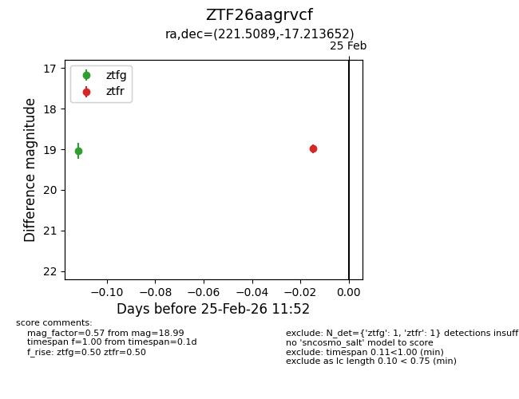
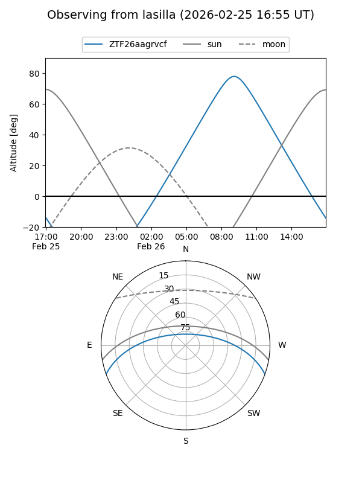
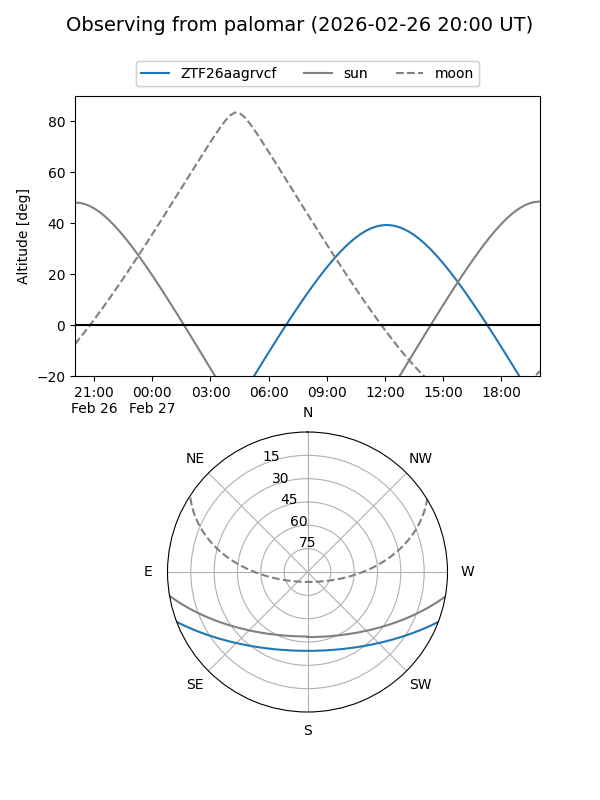
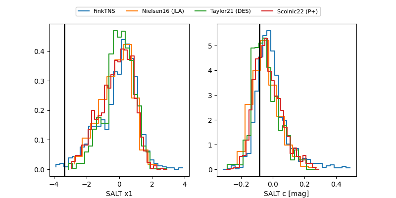

ZTF26aagrvcf
Target ZTF26aagrvcf at 2026-02-25 11:53
Aliases and brokers:
FINK: link
Lasair: link
ALeRCE: link
alt names
ZTF26aagrvcf (ztf,fink_ztf)
Coordinates:
equatorial (ra, dec) = 221.5089,-17.21365
equatorial (HMS+DMS) = 14:46:02.14,-17:12:49.15
galactic (l, b) = (338.2824,+37.66915)
Flags:
Photometry:
last ztfg=19.04, ztfr=18.99
1 ztfg, 1 ztfr detections
Lightcurve

Visibility


Additional plots
